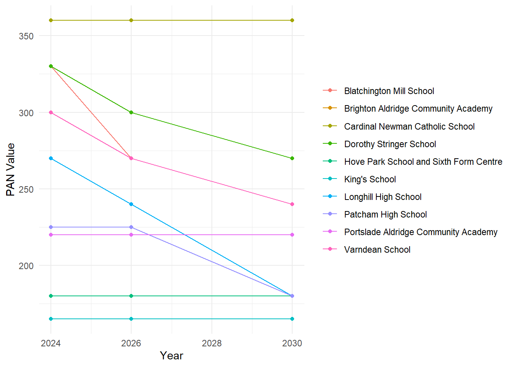
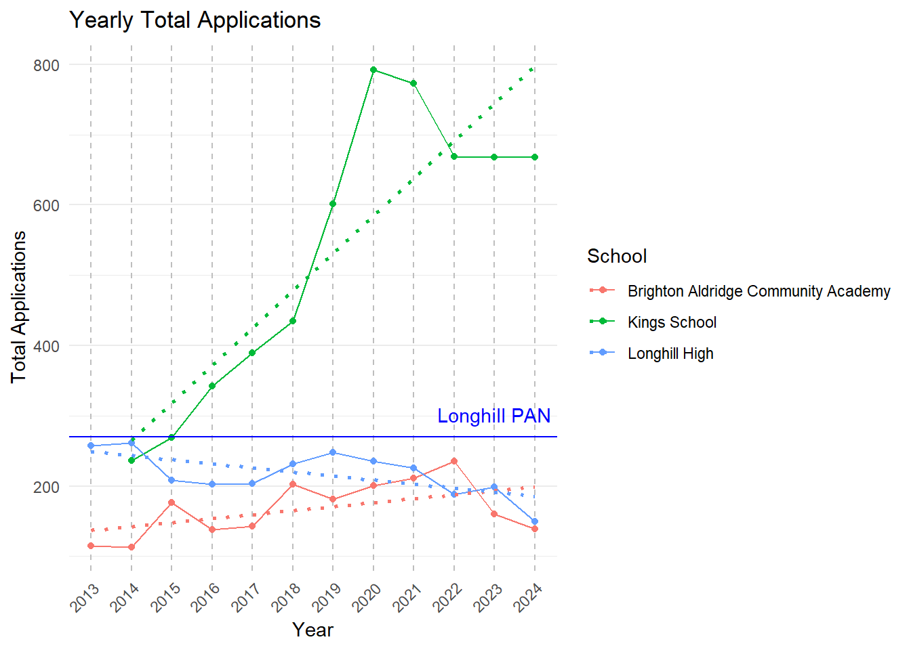
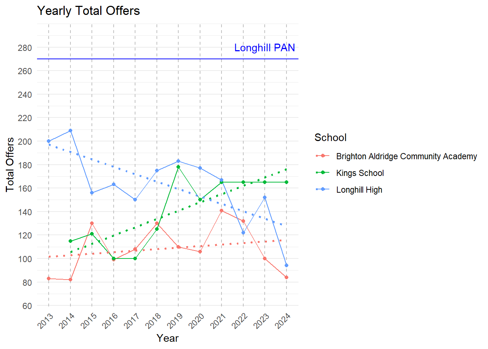
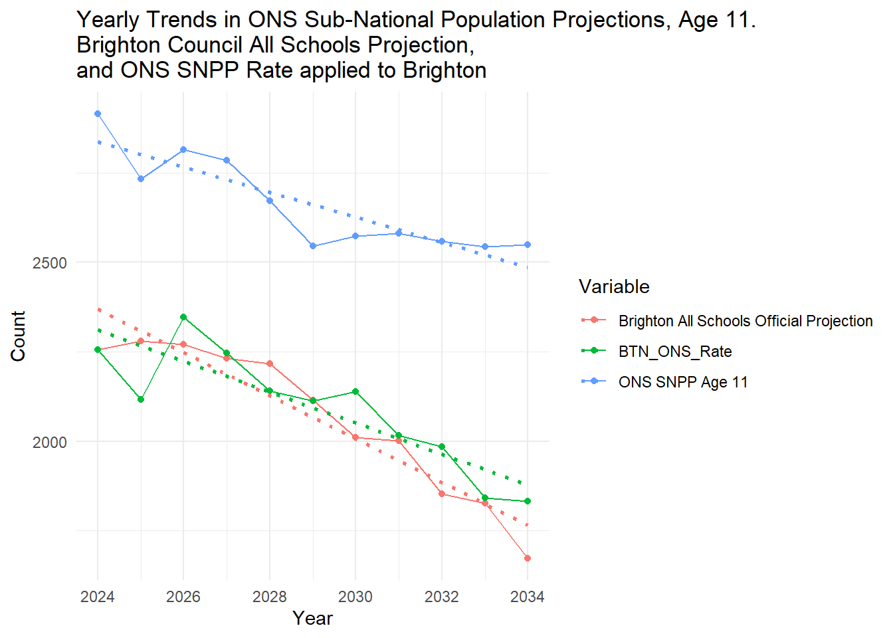

Brighton and Hove Secondary School Admissions Proposal - New Analysis and an Alternative Proposal
Addendum on Educational Performance
Disclaimer and acknowledgements
Everything below is very much a work in progress, but the urgency of this current situation has circumvented the usual review process. This is raw, largely unedited and very much ‘beta’ work - but is is a start and something that will get the conversation between the council and the citizens of Brighton heading, hopefully, in a more positive direction. There will be errors, there are some un-filtered bits (there have been many late nights this week!). Thanks to all those people who have already helped by contributing to the online conversation this week and messaged me with incredibly useful information and encouragement. I know we can reach a good solution together.
Terminology
PAN - Published Admission Number. This is the number of pupils a school is permitted to allow to enter a school in Year 7. There will also be PANs for primary schools, but in the context of this piece, whenever I use the term PAN, it will refer to Year 7. All of the individual school PANs are added together to give a city-wide PAN and is directly linked to the population of school children in the city. This population is projected to decline in the coming decade.
FSM - Free School Meals. This is the proportion of pupils in a school or residential area that receive free school meals because their household income is below a certain threshold. It is a widely used measure of social deprivation. In Brighton, the FSM threshold is currently household income below £16,190 - https://www.brighton-hove.gov.uk/schools-and-learning/free-school-meals
Headlines / Executive Summary
In this detailed analysis I will present a viable alternative to the current proposals put forward by the council which allows the council to hit its current declining pupil number projections in 2026 across all schools in the city with no disruption to schools in the city or catchment boundaries.
The proposal presented will allow the Council to see through on the pioneering FSM initiative it has developed and evaluate it properly before changing the system entirely, leading to better chances for more deprived students in the city and contributing to less intense segregation in the system.
It will allow for crucial space and time for this review to be completed.
I believe it is a proposal that can be backed by the population across all social and demographic groups in the city.
I believe it will allow the council to engage with a proper, joined-up, systems thinking approach that pays due care and attention to all relevant dimensions of the issue.
It will allow the council time to engage with a full-range of experts on all aspects of this problem, as well as a greater breadth and depth of members of the community through community groups and forums that represent the diversity of views in the city.
I would encourage the council to consider carefully the detailed evidence I present below and the recommendations I make and I will of course be happy to speak to them at length about this.
In summary the proposal is to reduce PANs for schools where it is not being reached at all already. This will not affect those schools at all, but will allow for a sensible redistribution of the excess amongst other schools, meaning they are not forced to reduce their own PANs. A concurrent benefit of this is it removes the current motivation to redraw catchment boundaries.
PANs are one big driver of the issues and potentially the most important at this present time. Despite what the Council says, from the analysis I have done, I believe there is no need to reduce PANs for most schools in the City in 2026 - reduction in PANS is necessary for some schools, but analysis below shows even for schools where they justifiably could be reduced, numbers still will be well in excess of their current admission figures and not smaller than the smallest school in the city.
Consequently, no change to current catchment boundaries is required in 2026 while still hitting Council PAN reduction targets, again, giving space and time the priority it deserves.
The desired increase in social mixing that the council is currently trialling through allowing FSM pupils from other catchments priority over students within, will in every likelihood lead to some of the outcomes already desired by the council (Social Mixing and achievement and academic attainment improvements). It is a pioneering initiative with potentially very positive outcomes that needs space and time to be fully evaluated. The results will not published until early 2025 - after any changes the council might try and push through under the current time table. In the People Overview and Scrutiny Committee held on 9/10/2024, the Council’s own expert, Dr Ellen Greaves, University of Exeter, urged the council to wait for the results of this initiative before making any changes to the admissions system - not to do so would be ignoring their own expert advice. If successful, this initiative will impact already high demand schools, so artificially reducing their PANs will amplify problems futher.
PANS for Academies, Free Schools and Religious schools cannot currently be set by the council. However, in the above meeting, Councillor Helliwell raised a point that a Government White Paper is on the horizon which may give local authorities the power to control ALL PANs in the near future - this could alleviate some of the issues I am about to describe still further.
Cllr Taylor and Richard Barker made the statement in the face-to-face meeting that that they would not consider a PAN lower than 180 for Longhill, as it would make it un-viable. I show below that is demonstrably untrue when comparing similar schools across the country - and even within the City itself! The King’s Free school has a PAN of 165 and in a short time has become one of the most successful and thriving schools in the City. Analysis of all similar schools in England and Wales shows out of 1163 similar schools, Longhill ranks 496, with 495 smaller open 11-16 secondary schools in existence today.
In the work below, I offer a viable alternative to the proposals presented by the council. An equity-driven scenario I have called the ‘Kings PAN Scenario’ which has the following outcomes:
no detrimental impact is felt across most schools in the city in 2026
a headline city-level PAN reduction is still achieved under the current council modelling scenarios
no school has PANs smaller than the smallest school already thriving in the city - and higher than or equal to their offers in 2024, so no school is in a worse predicament than it is currently in today
with the right creative thinking from the council, should the choose to adopt this plan, options will be presented such as the productive re-use of land released by reducing the estate (systems thinking). This could include social and/or affordable housing further contribute to the social mixing goals of the council in an otherwise relatively affluent area - a win win scenario. Many other options could be explored.
While this solution I am proposing is viable in the medium and maybe even long-term, it’s main advantage is it will allow space for a proper consideration of the “Wicked Problem” at hand. I believe it is only through acknowledgement and realisation by the Council of the inter-connected nature of schools and education with every other part of the city, that a truly sustainable solution acceptable to all residents of the city can be reached.
Prelude - a review of where we are at after a busy week
After attending various in-person and online meetings, it has become clear that the Labour Council manifesto promise to ‘not close a school’ anywhere in the city, is a primary driving factor behind the proposals. As far as I am aware, there was nothing in the Labour Council manifesto that stated that it was their belief that the best way to achieve this was to artificially stuff low-demand schools on the geographic fringes of the city in areas of low child population, with children from more well-off parts of the city, against the wishes of them and their parents. This is the nub of the issue and why so many people are very angry.
One of the schools at highest risk of closure - Longhill - is also, coincidentally, the school that Cllr Jacob Taylor (the Councillor leading the whole process) attended as a child, and a school that he had been a governor since 11 May 2021 until recently. He is no longer a governor there.
From what I have observed and listened to in these meetings, I am of the personal opinion that the educational mixing argument being promoted by the council as the main driver (alongside reducing roll numbers) for these proposals, while real, is actually secondary to the financial issues facing schools in the city. These are real and difficult to resolve and other solutions have been touted in recent months, showing that this is at the front of the Council’s mind.
It is my personal opinion that giving FSM pupils better access to better performing schools in the city, while a brilliant goal and something that should be addressed, is an initiative that is being hijacked and used as an inappropriate solution to the entirely different problem of financial viability. As everything is connected, it may help some of the underlying financial challenges in an indirect way, but the risk of collateral damage is very high and there are better solutions out there if the council chooses an evidence-based approach. I have come to this conclusion through observing the dismissive way the council are treating their own pioneering FSM policy by not even allowing it time to bear fruit and be evaluated before trying to force another solution through. This is important, as if the council admitted financial challenges were the driver, then different ‘solutions’ to the problem (such as the one I suggest below) become viable.
Listening to voices such as those from Class Divide in Brighton and knowing the social geography of the city as a geographer and resident, it is an established fact that there is a real issue of socio-economic deprivation compounded by segregation in the city, with residents in the most deprived Eastern parts of the city lacking both quality in education provision and choice. This is a wider and long-term issue and has driven initiatives to tackle socio-economic disadvantage through the school system and admissions shake-ups in the past. It is my belief that the reason many of these have failed is not due to the sadly pervasive class-led narrative of “middle-class parents from Preston Park” with “sharp elbows” “only looking out for themselves”, but a similar lack of systems thinking and the offering of poorly thought through solutions to complex interconnected problems. There is a very real risk that if the council doggedly tries to pursue its current path, it is inevitable the same will happen again, not only destroying trust across all sections of the city population, but failing those who are really suffering at the bottom of the socio-economic pile.
Compared to previous attempts to re-draw the catchments in Brighton, there is an additional demographic challenge this time. The projections of the decline of children in the city are likely to be borne out, to a greater or lesser degree, in turn reducing the money available to schools from the government in a system which allocates money according to, primarily, pupil numbers alongside some additional support according levels of deprivation or special educational need.
However, as I described in my last piece of work, distributions of children in the city are not even and the geographic location of schools relative to these children generates spatial challenges. There is also what we could describe as a ‘multiplier effect’ whereby the residential geographies, deprivation and school locations interact to amplify issues even further. A classic example of multiple deprivation.
The Council is faced with a big challenge, but rather than engaging in systems thinking and recognising that schools are a part of an interconnected urban ecosystem which encompasses the social fabric of the city with individual children, families and communities, transport systems, the environment, homes, jobs, and the economy, they are focusing only on the narrow educational dimensions of the problem, which while incredibly important, are no more or less important that the whole city system and cannot be managed in isolation from the rest of the city.
Having attended both the in-person consultation and the People Overview and Scrutiny Committee held on 9/10/2024, I still have the overwhelming impression that council is trying to rush through ill-conceived, poorly evidenced proposals that fail to look holistically at the problem. The level of objection from a huge number of families in the city is indicative of this failure.
A particularly big failure of process is that not only have the Council neglected the truly interconnected nature of schools and communities in the city, they have thus-far failed in their duty to carry out even the most basic evidence gathering and dissemination process before launching an engagement/consultation on the residents. Had they have completed this job in advance, they could have understood the problem better and come up with viable alternative, less disruptive, solutions - perhaps like the ones I propose below.
The Council have said that they will produce more evidence if this reaches the formal consultation stage, but it is my view that at this point it will be too late - to carry out the consultation properly, people need to be in possession of all of the facts. Evidence needs to come before policy. I am now even more of the strong opinion that the whole process needs to be paused to give time to build a comprehensive evidence base - however, the solution I present below, should the Council see the merits of it, offers them a chance of what might be described as a ‘constructive pause’ and a real change to be evidence-based in their solutions.
The council is giving the impression through its current approach to this process that dogmatism and ideology are driving decisions more than full consideration of all relevant evidence - I sincerely hope my impressions in person are off the mark and I really do hope this is a mis-characterisation and I would love them to prove me wrong on this, particularly after reading this piece.
On a practical note, this kind of gathering and analysing of data is hard work. My life is made considerably easier with good open data. I have repeatedly asked the council to share their data with me and offered my services on multiple occasions to assist them in the evidence gathering I have expertise in. I have had some positive interactions with Cllr Taylor and colleagues, but I am yet to receive any data. I have had correspondence that suggests it could be on the way, but I have asked three times this week and nothing has yet arrived.
Data Sources
Much of the data presented on this page are taken from a rare example of published and useful data here - https://www.brighton-hove.gov.uk/allocation-factsheet-year-7-places-september-2024 - alongside a series of similar tables for different years I had to scape around on Google to find. Dear Council - Please publish your data in a more usable from - it will help you as well as me.
PANS for 2026 and 2030 are derived from tables in the power point from the consultation website - https://yourvoice.brighton-hove.gov.uk/en-GB/projects/secondary-school-engagement-exercise/1
Any data not pulled from web-links in the code behind this webpage can be accessed here - https://www.dropbox.com/s/tx3treag895wer9/brightondata.zip?dl=0
PAN(demonium?)
PAN Background
It has become clearer to me over the last week that the Published Admission Numbers (PAN) for both individual schools and the City are a massive part - if not THE most important part of this whole issue and I hope what I present below will convince you of this too.
The PAN is really two problems - the city-level PAN for different years (which relates to population projections produced by the Council), and the individual school-level PANs (which affect how many pupils a school can admit at year 7) which control school intake. They are connected in that school PANs will sum to the city-level PAN. I will explore both of these dimensions, but first some local background:
A school cannot legally admit fewer children than its PAN where pupils wish to attend the school. The PAN is determined (initially) by the physical size of the school by the Government’s Net Capacity Assessment Programme, but it is not set in stone and can be reduced or increased according to demand. Physically larger schools may have artificially higher PANs even when lived pupil numbers are low - and we will see why this is important later.
In most secondary schools in Brighton (Stringer, Varndean, Hove Park, Blatchington, Patcham, Longhill) the PAN is set by the council.
Religious and Free Schools such as Cardinal Newman and King’s School are allowed to set their own PANs and the council can’t (presently) intervene.
Academies (Brighton Aldridge Community Academy - BACA, and Portslade Aldridge Community Academy - PACA) are also allowed to set their own PANs and the council can’t intervene.
One issue is that PANs for all schools contribute to the overall total number of ‘places’ in the City - but these don’t necessarily reflect pupils or their distribution (see my last paper if you want to know about geographic distribution). So if the Council is determined to reduce the number of places (PANs) in the city because of a declining population of children, if the Religious Schools and the Academies refuse to reduce their PANs and the council needs to reduce the total, the only way it can do this is by cutting, proportionally, MORE places from Stringer, Varndean, Hove Park, Blatchington, Patcham, Longhill than it would have done if it could control PANs everywhere. At least, that is the way they are operating at the moment.
I say at the moment as In the People Overview and Scrutiny Committee held on 9/10/2024, Councillor Helliwell raised a point that a Government White Paper is on the horizon which may give local authorities the power to control ALL PANs in the near future - this could alleviate some of the issues I am about to describe, but at the moment, nothing can be done by the council to affect PANS in some schools in the city.
PANs across Brighton
The graph below in Figure 1 shows the PANs for 2024 taken from here:
https://www.brighton-hove.gov.uk/allocation-factsheet-year-7-places-september-2024
Figure 1 - PANs by School and Type, Brighton
We can see from this graph that the academy schools and King’s School have a relatively low PAN compared to other schools in the City, with Cardinal Newman enjoying a PAN well above average at 360. This represents 14% of the total places available.
PANs vs Applications and Intake
The graph below in Figure 2 includes exactly the same numbers as above, but this time contextualises them relative to the total number of applications each school had in 2024 and the number of places that were actually offered to students that year.

Figure 2 - PAN 2024 relative to counts of total applications and offers in the same year
A couple of things to point out:
Total Applications include all 1st, 2nd and 3rd choices for each school. It’s likely that schools in multi-school catchments may receive both first and second choices, potentially inflating that number relative to the schools in single school catchments, so bear that in mind, however it can still be viewed as a crude measure of demand. I will disaggregate 1st, 2nd, and 3rd choices (well, just 1st choice, actually) in some other graphs below.
All schools within multi-school catchments are very popular and are able to easily fill their offer numbers and probably could at least twice over - which is useful context when considering PAN reductions.
Some schools in Brighton received low numbers of applications. For BACA and Longhill, the numbers of applications they received were BELOW their PANs. These were not popular schools in 2024.
For BACA and Longhill, their total offer numbers were also below their PANs. This means the schools were very under-subscribed and had excess capacity. Longhill had a PAN of 270 and a total offer count of 94. Almost three times fewer students attending than there were places available.
Figure 3 - Relative School Popularity (School 2024 Application to 2024 PAN ratio divided by Average 2024 Brighton Application to PAN ratio)
Another way of looking at Applications vs PANs is to take the ratio of applications to PAN and compare this with the city average - this is a form of standarisation to allow more meaningful comparison where underlying number vary. In the graph in Figure 3 above, the data has been rescaled (code in the github link) so that anything > 0 is greater popularity relative to other schools in the city, and anything < 0 is less popular.
Interestingly, we can see that Kings School - the smallest in the city in terms of places available with a PAN of 165, is relatively the most popular, Longhill, on the other hand, is relatively the least popular even after scaling according to the city average. Remember this for later on.
First Preferences, Offers and Rejections

Figure 4 - PAN 2024 relative to total First Preference Applications, Offers and Rejections.
Some things to note here in Figure 4:
First Preferences and rejections are an alternative demand measure for a school and less affected by double counting than total applications. More rejections occur where first preferences are high.
Three schools - Varndean, King’s and Cardinal Newman had more first-preference than PANs, indicating very high demand.
BACA, PACA and Longhill have significantly more PANs than first preference and thus larger proportions of their cohorts are filled with students who did not choose them as a first choice, indicating low demand.
Interpretation
- We can see from the evidence above that PANS for schools in the city bear little or no relation to the popularity of the schools in 2024, as evidenced through their application figures. In fact, for the most popular schools, their first-preference applications are far in excess of the places they have been allocated by the council - their PANS could easily be much higher, relative to other schools in the City.
- Some schools have PANs far in excess of their popularity which affects the rest of the system negatively. PANs matter when you have more demand than places as you can’t go any higher. When you have less demand than places in one school, the PAN is entirely irrelevant for the school (if you’ve only given out 94 offers, it doesn’t matter if your PAN is 270 or 2700!) but HUGELY relevant for the rest of the schools in the system as the number of pupils they can take in is reduced.
The Council’s Proposed Changes to PANs

Figure 5 - 2024 PAN and Proposed 2026 and 2030 PANs under Option A of the Council’s reorganisation proposals.
*I should note that I have asked for the boundary data and numbers associated with the Option A boundary reorganisation, but at the time of writing have not received these. These new boundaries are slightly different and will have slightly different pupil numbers within catchments, but they are similar enough to the present catchment to hopefully still be able to make reasonable comparison. If more and better data arrive in the future, I will of course re-visit and update.
The graph above is a representation of the data provided in slide 11 of the materials supplied by the council. Under “Option A”, it’s clear to see that the council proposes to reduce PANS for all Council run schools in the city at two points in the future, first in 2026 (which they are also proposing to coincide with a boundary change - I will not cover boundary changes in this piece, but will do something on boundaries and geography in the future) and then again in 2030 (unclear if boundary changes are also on the cards at this point).
Below we see the same data, but this time in a table with the Council City-Wide PAN targets they have set at the bottom. Next to these council PAN targets are three illustrative scenarios I have produced to explore the decisions the council is making and shine a light the political choices (for this is not a neutral process, far from it!) they are making through their PAN setting. The final column is a Scenario I am calling the “Kings 2026 PAN Scenario” and I believe is the scenario which could be the key to unlocking the challenges the city is currently facing. I will explain why this is below.
Table 1 - 2024 PAN and Various PAN scenarios
| School | Type | PAN 2024 | PAN 2026 | PAN 2030 | PAN 2026 Scaled Popularity | PAN 2026 Scaled Even | PAN 2026 Kings Scenario |
|---|---|---|---|---|---|---|---|
| Blatchington Mill School | Community school | 330 | 270 | 240 | 289 | 315 | 330 |
| Brighton Aldridge Community Academy | Academy sponsor led | 180 | 180 | 180 | 57 | 172 | 165 |
| Cardinal Newman Catholic School | Voluntary aided school | 360 | 360 | 360 | 388 | 343 | 360 |
| Dorothy Stringer School | Community school | 330 | 300 | 270 | 380 | 315 | 330 |
| Hove Park School and Sixth Form Centre | Community school | 180 | 180 | 180 | 250 | 172 | 180 |
| King’s School | Free schools | 165 | 165 | 165 | 275 | 157 | 165 |
| Longhill High School | Community school | 270 | 240 | 180 | 55 | 257 | 165 |
| Patcham High School | Community school | 225 | 225 | 180 | 228 | 214 | 225 |
| Portslade Aldridge Community Academy | Academy sponsor led | 220 | 220 | 220 | 128 | 210 | 220 |
| Varndean School | Community school | 300 | 270 | 240 | 393 | 286 | 300 |
| Total | 2560 | 2410 | 2215 | 2443 | 2441 | 2440 |
Observations - Council Proposed PANs
- I have made a number of earlier observations which look at proposed PAN reductions for different schools in the city level relative to the population distribution of pupils and have shown that there are more severe reductions in areas of higher demand and less severe reductions in areas of lower demand, so I won’t go over that again here.
- What I will comment on here, however, are the PAN levels relative concepts of popularity, equality and equity - a different, but vitally important angle.
PAN 2026 Scenario 1 - Scaled by Popularity
Firstly, I should point out that these scenarios below are illustrative - I know that school entry numbers are predicated on multiples of 30, but these are designed to show the effect of different policies and priorities on these numbers.
Taking relative popularity as shown in Figure 3 above, and using that to scale up and down the PAN according the level of popularity in 2024, we see:
The PANs for Dorothy Stringer, Varndean, Hove Park, Kings, and Varndean in 2026 would all increase by quite large numbers of pupils, reflecting their popularity and accommodating demand.
The PANs for Blatchington Mill would reduce almost in line with proposals, Cardinal newman, already with a high PAN, would remain similar, and Patcham would remain virtually the same.
The PANs for BACA, PACA and Longhill would decline considerably and to the point where they would not be viable schools.
As stated at the top, this is merely illustrative and NOT in any form a recommendation, but it is useful to explore how the reality of school popularity would change the PANs across the city if it were used.
PAN 2026 Scenario 2 - Scaled by even (equal) reductions
What would happen if the council reduced PANs down for each school, but did so evenly across the whole city, according to their current distributions? i.e. dividing each school PAN 2004 by the total Brighton PAN in 2024 and simply multiplying that proportion by the 2026 Brighton Total PAN. Again, I know these don’t fit into multiples of 30, but help for illustration.
What this scenario is useful for is exploring is the impact of some schools being able to opt out of reducing thir PANs. If all things were equal, the 2026 Scaled Even PAN would be the same as the Council 2026 PAN.
As we can see, things are not equal. Part of this, of course, it due to the fact mentioned earlier that BACA, PACA, Cardinal Newman and Kings set their own PANs at the moment and the Council can’t change this.
However, we can start to see which schools are hit harder by the intractability of not being able to make the non-council run schools take their fair share of the hit.
Blatchington Mill’s PAN is 15 pupils lower than expected
Longhill is 17 students lower than expected
Dorothy Stringer 15 students lower
Varndean at 15/16 students lower.
The presence of schools in the system that can set their own PANs, unfairly disadvantages other schools who can’t in this scenario.
We can see that more-or-less what the council are proposing - factoring out the schools they can’t control - is something close to this equal reduction scenario, with Patcham perhaps being a little more equal than the others. However, equality is quite different from equity, which pays attention to different levels of need.
Another important point to note is that there is a very large difference between a PAN set according to popularity and a pan set according to equality. While we wouldn’t want to just consider current popularity for various reasons (popularity ebs and flows, it reduces diversity, crowds out those who are different etc.) equally, setting PANs equally fails to acknowledge there there are any reasonable justifications for some variation in the system.
PAN 2026 Scenario 3 - the Kings Scenario
This scenario takes a little explaining which I will do below. One way of thinking about this scenario is it is the EQUITY scenario. It pays more attention to equality but also pays some attention to need as defined by demand for places. It is designed to offer an alternative to focusing just on popularity or equality. The outcomes of this scenario are:
Most schools in the city don’t need to alter their 2026 PANs from current levels at all.
No school in the City has a PAN lower than the demonstrably viable 165 PAN that Kings School already has (hence the scenario name).
PANs are more closely aligned with demand, although a number of schools are ‘donating to the system’ - doing their bit for the good of the whole school system in the city by having PANs considerably lower than their demand levels would suggest, allowing less popular schools to retain viability.
Below, some more context to this problem:
Small School Viability - the BACA and Longhill challenge
In the Town Hall face-to-face meeting and again in the People Overview and Scrutiny Committee held on 9/10/2024 on Tuesday, Cllr Taylor stated two relevant things:
The Labour Council campaigned on a manifesto that promised that it would not close a school within Brighton and Hove.
That it was his view that a year 7 PAN of lower than 180 would not lead to a viable school that could remain open.
The latter is tied intrinsically to the former with these two statements, but is this really the case? Let’s unpick this a little and zoom in on the second of the statements.
Small Schools in England and Wales
The Government provides data on all schools in England and Wales through their edubase dataset, published annually. https://get-information-schools.service.gov.uk/ - the database is in the data folder which will allow you to recreate all of this analysis at home with the github code links above.
In order that we are comparing like-with-like, let’s only look at open state-funded 11-16 schools in England and Wales. The histogram below shows the distribution of the number of pupils in these schools. The red and cyan lines show the number of pupils at Longhill and PACA respectively (included in the histogram distribution).
I have not included BACA or Kings in the histogram as they are 11-19 schools and thus not directly comparable, however I have included their numbers as indicative vertical lines on the plot.
Figure 6 - Histogram showing the distribution, by total numbers of pupils recorded in the school in 2024, of all open, 11-16 state funded secondary schools in England and Wales.
- What we can see from the histogram in Figure 6 is that despite the lowest pupil numbers in the city, Longhill and BACA are not outlier schools nationally. Indeed quite the opposite, they fall somewhere near the middle of the distribution of all comparable schools, perhaps slightly on the left of the distribution, so below average, but most people observing the graph would agree that they are pretty average sized schools.
Interpretation
Total size, is of course, somewhat different to PAN, but for a school with 5 year-groups (Yr 7 to Yr 11) and equal numbers of pupils in each year (which would be the case for popular schools that hit their PAN every year), if the PAN was set at 165 (the same as Kings in 2024) the total school population would be 825. Longhill currently has a population of - checks figures - 825.
The national distribution of comparable schools shows that the small schools in Brighton are not ‘small schools’ just small relative to the city.
It is abundantly clear from the evidence above that schools even smaller than the smallest in Brighton are viable. Even if the PANs in the small schools dropped lower than I am recommending currently (165) to, say, a 4-form entry of 150 (a reasonable scenario) - this would equate to a school size of 750 pupils or the pink vertical line on this histogram.
Does the argument for closing schools in Brighton and Hove with low numbers stack up?
To reiterate, the council has repeated cited at the in person consultation meeting I attended and again in the People Overview and Scrutiny Committee held on 9/10/2024 that it is not sustainable to have schools with low numbers of pupils. In the Scrutiny meeting, Councillor Helliwell asked a question about the minimum viability of schools.
Councillor Taylor and Richard Barker responded that is was their view that 180 pupils was the minimum single year PAN they would consider viable.
Given the evidence above, it would appear that they are mistaken in this view. This is absolutely crucial as, as I will show below, it is the case that it is approprate, fair and equitable to reduce the PAN of at least one school in the city to a level very slightly below 180 (and still well above their intake for the last 5 years) for the benefit of all schools in the city. Futhermore, the evidence above proves:
A large number of comparable 11-16 schools in England and Wales (495 if you count them) are operating with smaller numbers of students than Longhill and BACA.
Within Brighton itself, the Kings School, a thriving and demonstrably viable school in the North of the city, is doing very well with a PAN of 165.
Even if Longhill and BACA reduced their PANs to a 4-form entry of 150 - something I am not advocating for here - they would still not be uncommonly small in England and Wales terms. So there is a lot of room for manoeuvre if only the council could think creatively.
Now, of course, there are financial intricacies and challenges to which I am not privy and potentially other considerations, but a question we would all be forgiven for asking at this point is:
Is there a particular skills deficit within Brighton and Hove Council that it considers itself unable to contemplate running schools in the city of a size that a large proportion of other local authorities in the country appear to manage quite happily?
Why does the council consider itself unable to manage what other councils are able to achieve?
Would a sensible course of action be to consult with other local authorities who are more experienced in dealing with some smaller schools in their portfolio?
If there are good arguments against this, what are they, and what evidence can you provide to support those arguments?
PAN 2026 Scenario 3 - Continued
It is clear then, that there is no justifiable reason why Brighton and Hove Council can’t run some schools with PANs lower than 180. I have shown how PANs of even 150 are viable in a national context.
Recap
We know that if PANs bore any relation to demand (PAN 2026 scaled by popularity, below), schools like Longhill, BACA and PACA would not be viable in 2026.
We know that if we just reduce PANs evenly across the system in 2026, popular and in-demand schools will be turning away pupils they could easily accommodate (and we’ve not even got the the impacts of the new FSM policy and the exodus of pupils from the Private sector after the introduction of VAT)
Back to the PANs and Demand
Code
# Create kable table
kable(admissions_with_sum, caption = "Council PAN and PAN Scenarios")| School | Type | PAN 2024 | PAN 2026 | PAN 2030 | PAN 2026 Scaled Popularity | PAN 2026 Scaled Even | PAN 2026 Kings Scenario |
|---|---|---|---|---|---|---|---|
| Blatchington Mill School | Community school | 330 | 270 | 240 | 289 | 315 | 330 |
| Brighton Aldridge Community Academy | Academy sponsor led | 180 | 180 | 180 | 57 | 172 | 165 |
| Cardinal Newman Catholic School | Voluntary aided school | 360 | 360 | 360 | 388 | 343 | 360 |
| Dorothy Stringer School | Community school | 330 | 300 | 270 | 380 | 315 | 330 |
| Hove Park School and Sixth Form Centre | Community school | 180 | 180 | 180 | 250 | 172 | 180 |
| King’s School | Free schools | 165 | 165 | 165 | 275 | 157 | 165 |
| Longhill High School | Community school | 270 | 240 | 180 | 55 | 257 | 165 |
| Patcham High School | Community school | 225 | 225 | 180 | 228 | 214 | 225 |
| Portslade Aldridge Community Academy | Academy sponsor led | 220 | 220 | 220 | 128 | 210 | 220 |
| Varndean School | Community school | 300 | 270 | 240 | 393 | 286 | 300 |
| Total | 2560 | 2410 | 2215 | 2443 | 2441 | 2440 |
A more equitable solution to the PAN problem that pays due consideration to demand, while also acknowledging the reality of pupil numbers for all schools across this city, can be represented by my PAN 2026 Kings Scenario above.
In this scenario:
Most schools in the city keep PANs that are in line with their 2024 levels. Many of these schools could accommodate more, but in the interests of continuing the viability of other schools in the system, they are in effect donating PAN to less popular schools.
The recommendation is that BACA in an ideal world would reduce its PAN to 165 - well in excess of a demand-based PAN, but lower than its current level. I acknowledge that under the current system this is not possible, but at just 15 students options probably exist to transfer un-used PAN to larger schools as has been done with Varndean in the last, bear with me - we’re within margins of error in the whole system now.
Every other school in Brighton EXCEPT Longhill, keeps its PANs at the 2024 Level. For most of these schools, as I have said, this is a reduction in PAN relative to popularity. I propose Longhill reduces its PAN to 165 - the same level as Kings School - and still WELL IN EXCESS of its actual student intake in 2024 of 94 students - and as we will see later, well in excess of its actual student number for the LAST 5 YEARS.
I believe this proposal is both workable, sensible and importantly, equitable, recognising both the need to keep all schools open in the city and the recognition of demand in other places. It will also buy the council the time it needs, should it wish to try other equity improving initiatives around diversity and segregation to fully engage in a more comprehensive review of all evidence from all of the inter-connected domains, while hitting its own overall PAN targets if that is an operational challenge. Essentially, while not everybody wins, there is a much lower proportion of losers under this strategy.
I am aware - and indeed steeling myself for the inevitable - that some may feel that despite all of the evidence above, I am somehow picking on Longhill, but to be totally honest, I don’t think my brain had even acknowledged its existence until this week - yes, I knew there was a school in Rottingdean/Ovingdean, but that was all I knew - I didn’t know any of its background. But its importance has started to shine through incredibly brightly while carrying out data analysis on the topic over the last week or so. So let’s explore the Longhill problem in a little more detail.
The Longhill Challenge
Recent Numbers
Longhill is a school on the Eastern geographic edge of the city in Rottingdean (for a map see my last analysis here - https://adamdennett.github.io/BH_Secondary_Admissions_Analysis/BH_Sec_Sch_Analysis.html#current-situation)
The intakes of all secondary schools in the city are a matter of public record and can be obtained from the Council’s webpages, for example - https://www.brighton-hove.gov.uk/allocation-factsheet-year-7-places-september-2024
You can see that in 2024, Longhill admitted (or at least offered places to) 94 students. This was relative to a PAN in 2024 of 270 places. Put another way, the school admitted almost three-times fewer students than its PAN would have allowed it to.
Clearly this is not ideal for Longhill as the funding that schools get is tied to pupil numbers (if you are interested in exactly how this works - HT James for this - see here). But what does it mean for the rest of the school system in Brighton, is this good or bad news?
It’s bad. In 2024, Brighton Council set a hard ceiling of 2560 for its PAN - schools are legally not allowed to admit more pupils than their PAN (although Varndean did due to special circumstances). If one school in the system has a much higher PAN than it can reasonably be expected to hit, the net effect is it takes potential capacity away from other schools. It’s a classic example of a zero-sum game.
As I mentioned earlier in this piece, PANs are originally derived from a physical measure of school size - the volume of the buildings, pretty much. So it might be the case that they are maxed out in terms of their physical limits - so not quite a zero-sum game in this context.
In 2024 it could be argued that Longhill isn’t leeching capacity from other schools if other schools are already maxed out (and in 2024 I think most in the city were), but this picture changes in a declining school roll environment.
Under current Council proposals for 2026 in Option A, Longhill’s PAN reduces slightly to 240, but is it reasonable to expect anything like this number of students to attend? If it is not, and other schools in the system already in high demand are being forced to reduce their PANs as well, then we are now in a situation where Longhill is unfairly taking capacity away from schools where demand is higher.
Why are Longhill’s 2024 numbers low - is this an anomaly and might we expect them to change?
People might reasonably ask, what if 2024 is just an out-of-character blip? Something related to its recent downgrading from an Ofsted rating of “Good” in 2018? to “Requires Improvement” in 2024?
Or what if it is just a brief demographic anomaly? I heard someone say in the consultation meeting “Longhill used to be the best school in the city!” - If its numbers were boosted, would it not just return to its former glory?
To try and answer these questions, we need to dig back into history a little. What were it’s numbers like in previous years?
As an aside, this is a plea again to Brighton Council - please sort your data out!! I had to trawl through about 11 different web-pages, open several different PDF documents *NB, PDFs are a TERRIBLE way to store data - webpages not much better. Spreadsheets, csv files, or, whisper it - an API - would all be better. If it weren’t for my tame AI helper, I’d still be processing these data next month!
All of my code for processing these data and the original source files can be accessed here - https://adamdennett.github.io/BH_Schools_2/data_processing_scripts.html
School Application and Offer History Across Brighton
Figure 7 - Total Applications to all schools in the City, 2014-2024

Figure 8 - Total Offers to Pupils by School, 2014-2024
Figures 7 and 8 above show the published total application and offer data by school for the city between 2014-2024 - a few points to note
You will notice that over the 11-year period, BACA is persistently at the bottom of the rankings on both measures and in recent years has been joined by Longhill
Varndean, Dorothy Stringer and Cardinal Newman are fairly consistently near the top on both measures.
Patterns can be a little difficult to discern with all schools on the graph, so lets extract our smallest schools in the city:

Figure 9 - Total Applications (small schools), 2014-2024 - with linear trend lines fitted

Figure 10 - Total Applications (small schools), 2014-2024 - with linear trend lines fitted.
Interpretation
What Figures 9 and 10 above show more clearly are the 11-year linear trends associated with applications to the smallest schools in the city. These have some properties of note:
While in terms of both applications and offers, there is a degree of bouncing around in the numbers, the linear trends are revealing.
For Longhill, the trend in both applications and offers is of secular decline.
Longhill was rated as “Good” by Ofsted in 2018 which is likely to account for the sudden up-tick in applications and offers in 2019. However, it remained “Good” (at least as far as the official ofsted reports were concerned) until March 2024 - a 6-year period of being “Good” that also saw a year-on-year decline in both applications and offers.
Similarly, prior to 2018, Longhill also had a period of “required improvement” when both its applications and admissions were trending higher.
Both of these observations are evidence that it is not just the quality of the education on offer which might be resulting in the decline (in student number terms) of the school. It is likely (and I will explore this in the future) that these are longer-term demographic trends in the city, combined with the physically remote location of the school.
One analogy of the Council’s current approach to Longhill could be that it is taking on the role of King Canute trying to hold back the inevitable demographic tide - a battle that it will not win as these things are long-term, slow-dynamic systems.
It should be noted that the Council can do nothing about the location of the school - powerful as it might be, even it cannot move mountains or indeed rolling chalk hills! There’s little it can do about demography either - ageing, migration, fertility and mortality are largely out of its control. I can build new housing, and this could be something that might help arrest the decline of the school a little, but this is also a project outside of the remit of the education team.
Perhaps most noticeable about Longhill’s decline is that since 2020, it’s applications have been in a slow, steady and regular decline. This suggests to me the trend is here to stay and very much supports my contention that a PAN of 270 is far too high both now and in the near and long-term future.
To be fair to the Council, the appear to have noticed some of this themselves and in 2030 have proposed under Option A, to reduce Longhill’s PAN to 180, but from the evidence I have presented here, I think this is too late. The PAN needs to be reduced more dramatically and sooner.
While Longhill’s PAN remains artificially high - and FAR higher than it’s likely student numbers even under the most optimistic of future scenarios, in a city system of overall declining student numbers and where most of these numbers are actually Longhill’s to lose, the net effect is that Longhill is artifically forcing other schools in the system to lower their numbers when they don’t need to.
Just to note again, if you are coming in with numbers lower than your PAN, the PAN is utterly meaningless for you as an institution, but potentially catastrophic for other schools in the system who are forced to cut classes when they don’t need to. A more accurate PAN means the rest of the PANs can be spread around more equitably. It is an utter no-brainer to reduce Longhill’s PAN, it will not make their situation any worse than it currently is, but stands to improve the situation for all other schools in the city.
We can contrast Longhill’s decline with the rapid ascent of the Kings School. Almost in a mirror of the fortunes of Longhill, Kings School has been on the up. Despite its hard ceiling of a PAN of 165, which you can see coming in to play in 2018 in Figure 10.
Kings School could actually go higher, but it is physically located in an area of the city congested with schools, so I would not advocate for this - where it is on PAN would appear to be sensible.
A word about BACA - BACA’s numbers are low, but relative to the other small schools in the city, fairly steady. I would view this as encouraging and BACA should be supported to be the important small school serving an important part of the city.
Figure 11 - Yearly application trends at four of the larger / more popular schools in the city
Figure 12 - Yearly offer trends at four of the larger / more popular schools in the city
By way of contrast, Figures 11 and 12 show the temporal trends for applications and admissions in some of the more popular schools in the city.
What is noticeable about these schools is their relative consistency. There is some variation and some trending slightly up or slightly down - this will be relevant later when we compare to long-term population trends at the city level, but at the moment we can note that any PAN changes imposed on these schools would run counter to their long-term trends of popularity and viability and I would view it as a negative intervention on the part of the council.
The Longhill Challenge - Conclusions and Recommendations
I hope that the evidence of longer-term trends presented here helps evidence that Longhill is not being unfairly targeted in this analysis. It has long-term issues of declining number which do not appear to be directly related over the long term to its performance - of course more work would need to be done to establish precisely the contributions of demography and performance to this observation.
I am aware that what I have presented here will not solve the problems at Longhill - the council will have to think long and hard about a strategy of managed decline in numbers that can still support the school to remain viable.
It’s also true that Longhill’s student population problems might get even worse under the new scheme to allow FSM students (40% of the Longhill population!) to select schools in other parts of the city should they wish. These students will go off and mix in more affluent parts of the city and improve segregation and integration - something that the Council’s other expert, Professor Stephen Gorard presented as having universally positive outcomes in the People Overview and Scrutiny Committee held on 9/10/2024. However, the solution to this problem is not to bus students long-distances back the other way. Indeed Prof Gorard also said very clearly that ’any programmes of mixing and integration would need careful thought so as to cause MINIMUM DISRUPTION.
I have evidenced above that Longhill can be viable as a smaller school and I think it should be supported to be a thriving smaller school, but it is not viable as a large school, no matter what ill-conceived policy might be imposed to force it to be one. Anything like this would run against a huge weight of evidence and will be ultimately destined to fail, generating more problems than it solves in the process.
One final point of note is that the council needs to come to terms with the reality that Longhill is already a very different school in size and demography than it was perhaps in the time when Cllr Taylor was a student. Yes, it still occupies the same site, but the site does not suit the school it is any more.
This is actually a fantastic opportunity should the council choose to grasp it. It owns a large site in an affluent part of the city that should it choose to reduce the size of the estate, then it could use this resource for any number of productive initiatives, not limited to but perhaps including affordable housing (although I am aware of the challenges the planning system may through up here). This is an opportunity that needs the kind of thinking beyond narrow educational boundaries I have already discussed.
I would urge the council to consider this very carefully indeed. I will re-iterate this:
Longhill does NOT need to close but it must be helped to manage its long-term structural decline in pupil numbers over the coming years. This problem will not be solved by bussing students in from other parts of the city, the problem is too big and too systemic for this to be a viable fix, but a smaller school may actually present opportunities for the council it has not yet considered.
Total PAN and Questions about Population Projections
Phew, if you’ve made it this far - well done. That was hard going! I hope that you now much better understand the problem of PAN distribution in the city. But unfortunately, there’s more. - sorry! Feel free to skip to the end of you want, but this is relevant.
How do the Council come up with total PANs for the city anyway? And are these numbers reliable?
Good question - I’m glad you asked! I promise this is one final push, stick with me!
In my last piece I implored the Council to publish as much information as possible, including their methodology for estimating (present day) and projecting (into the future) pupil populations in the city. I will ask again - PLEASE PUBLISH YOUR DATA AND METHODOLOGY.
Year 7 PANs relate directly to the Population of children who will be going into Year 7 in the next school year. For most children when they start, they will be 11 years old. So how do we know how many there are?
I know a little bit about population estimation and projection - in the dim and distant past (while we were still in Europe - remember those days?!) - I worked on an EU Funded project to project populations in different parts of the European Union, called DEMIFER - here is some work we did on London, if you are interested - https://archive.espon.eu/sites/default/files/attachments/DEMIFER_Deliverable12_12_UKI1_UKI2Inner_and_Outer_London.pdf
Anyway as my mentor at the time Professor Phil Rees used to say - “All projections are wrong, but some are more wrong than others!” - sage words that have stuck with me ever since.
In the face-to-face council meeting many people attended on Tuesday, someone asked about the validity of the numbers and the response was “our projections are reliable” or something to that effect. I could almost hear Phil Rees fall off his chair in Leeds!
So how do I think these numbers are arrived at and do I believe them? In the absence of a published methodology we will have to guess. If I were the council this is how I would do it:
Probably my most reliable source of data is the information I already know about how many children I have in year 6 in the state school sector - i.e. within the council run primary schools in the city. This is a pretty good start. Depending on when in the year I count those year 6 children before they start year 7 things might change - a greater or lesser number may move away, some may arrive either from within the country or from abroad. Sadly some might die. Some might already be in the city, perhaps at a private prep school, but their parents decide the state sectors is a better (or cheaper) option at secondary school. Some may go the opposite way from a state primary into the private sector. More or less though, most children in year 6 in the state sector will more into year 7 in the state sector and adding all of these up will give a pretty decent estimate of the total PAN in the city.
What I have described above is at the high City level - The council have a further advantage of knowing WHERE in the city these primary school children live. They know which catchments they live in, so they have a pretty good idea which secondary schools they are most likely to apply to.
It would be brilliant if the council were able to release at the neighbourhood level, counts of year 6 (10 year old) pupils across the city into the public domain. This is useful as we can then compare these data with other datasets such as the Census which can be used as both cross-validation but also allow us to estimate how many non-state-school children of the same age are in different areas. This is important as, as we shall see, occasionally there are shocks to the system which can throw our estimates out a bit.
Normally, we would expect our attempts at projecting populations into the future to get worse, the further away from the last reliable point of real data. This is why all Office for National Statistics (ONS) Projections are re-based (corrected) every time there is a census.
Most projections start life with the Census. In the UK, the last Census was in 2021 (you can probably remember filling it out as there wasn’t much else to do during the Pandemic!) and only happens every 10 years.
To try and fill the void between Censuses, various different sources of population data can feed in to try and account for things like internal migration, international migration births, deaths, refugees, asylum seekers, and visitors who switch to stayers. One of the most commonly used sources are GP patient registers and these are pretty good for some types of people (kids, old people, women) but pretty bad for young men (who often are slow to register with a GP once they move).
To help with its PAN projections, on p255 of the report on this page - https://democracy.brighton-hove.gov.uk/mgChooseDocPack.aspx?ID=11316 - it’s clear that the council uses the Schools Census and GP register data, with some adjustments applied for children attending the two Religious Schools (although not private Schools) in the city.
Comparing Brighton PAN Projections with ONS Sub-National Population Projections
Verifying the validity of the Population Projections and associated PAN projections produced by the Council is important. If projections are out, this could have existential impacts on schools, so getting it right is important. Further context to this concern is given in 2015 where a review of Brighton’s pupil projection methodology was carried out - https://democracy.brighton-hove.gov.uk/ieDecisionDetails.aspx?AIId=47946 - and found issues with the methodology employed. While I am sure the council has acted upon the recommendations of the report, I can find no detailed documentation describing how their current projections are calculated.
While I have no reason to believe the Council employs a poor methodology to project its city-level and catchment-specific student populations and PAN, without documentation and methodology to support the numbers, we don’t really know. Verification is a basic part of due diligence, especially if disruptive changes hinge on the numbers produced.
It should be noted that given the importance of accurate projections for a range of applications, from estimating school numbers to projecting elderly care need, a number of Local Authorities in the UK turn to established professionals for assistance. Companies like Edge Analytics in Leeds provide these services - a legitimate question to ask is whether the reason for Brighton not producing methodology documentation is because they buy in professional services, and if so, from whom?
In the UK, the most reliable population projection data available are the ONS Sub-National Population Projections - SNPP. As national statistics, these are the benchmark, so any projections that deviate, not necessarily in absolute terms, but certainly in relative terms, need careful justification and evidencing.
In Brighton, tucked away on p255 of another (!!!) PDF document - https://democracy.brighton-hove.gov.uk/mgChooseDocPack.aspx?ID=11316 - can be found the official (as of 22nd January 2024) Pupil Population Projection Numbers. I have been able to compare them with the ONS projections for 11 year olds below:
Figure 13 - Comparison of Brighton PAN projections and ONS Sub-National Population Projections.
There are, as ever, a few things to note here:
Firstly the ONS SNPP numbers are higher - this is to be expected as the Brighton numbers should be adjusted down to only account for pupils in the state sector - home schooled pupils and private school pupils are likely the main reason for discrepancies but others probably exist.
One small point is these numbers from the published Brighton documentation from Jan 2024 are different from the numbers that appear in the consultation PowerPoint. Projections do change, but without a published methodology, the reasons behind this are opaque.
In 2024 the difference is 659 people aged 11 across the city - quite a large number if we think about this in terms of class sizes of 30 and the PANs for individual schools seen earlier. This difference grows and contracts a little until 2030 when it is at 563, but then gets much larger to 878 by 2034.
What this trend shows - and you can see it in the graph - is that Brighton and Hove Council are projecting numbers of school children in the city to decline FASTER and more severely than the Official ONS National Statistics.
Put another way, if we apply the ONS annual population change rate to the Brighton starting PAN in 2024, we end up with quite different population estimates - see Figure 14 below.

Figure 14 - Population Projects with Brighton PAN tracking ONS annual rate
We can see that by applying the ONS rate - a legitimate and defensible methology, we can actually end up with plausible, but quite different population estimates.
Under this methodology, in 2026 we have a PAN of 2347 (vs original Brighton PAN of 2270 - i.e. we have gained 77 students, magically. Roll forward to 2030 - the next big PAN reduction point, and we have 127 more students.
My point here, is not to say that applying the ONS rate to the Brighton population is better - it is almost certainly an inferior methodology (although, who knows, it might not be!) My point is to say - without the full methodology published by the council, they might as well be plucking the numbers out of thin air!
My hasty estimates above are totally plausible. They apply a method which is common the world over in projections, but they arrive very different numbers at crucial years which could mean the difference between schools losing entire classes from their entry cohorts, or having a sound argument for increasing capacity.
Independent Schools
On final note on this topic needs to go to the role that Private/Independent Schools play in the Brighton System.
It is difficult to determine how many Brighton resident children attend independent schools within the city, but it will be a measured in the hundreds judging by the differences the the PAN and the ONS 11 year old estimates above.
The Labour Party (the National one) are planning to introduce VAT on Private School fees - https://www.theguardian.com/education/2024/oct/08/vat-private-school-fees-no-delay-says-minister - no-one knows that the impact of this will in terms of adding more students who parents can no longer afford the costs, into the state system, but it will be non-zero.
This of course, would result in more students in the state school system and correspondingly any city-wide PAN projections needing to be uplifted.
Conclusions
Got there - and trust me, I am far more relieved to have reached this point that you (or maybe not - sorry it was a long one!)
While I didn’t explicitly articulate my aims and objectives at the beginning, I hope that in reading this work you saw that my mission was to shine a light on the issues that inequitable distribution of Published Admission Numbers have brought to the school system in Brighton.
I did this through the careful and objective presentation of data that are already in the public domain, but had yet to be curated an analysed a logical and objective way. In the process of doing this, particular features of the inequities in the current system shone through.
It is clear to me - and hopefully now to you - that many of the issues in the school system in Brighton are manufactured from the way that the allocation of places pays little or no attention to demand and the supply side does not match the demographic reality of the city.
The Council already knows there is a problem with Longhill, but I am not sure really looked deeply enough to understand the factors that I have presented in this piece.
Longhill deserves to be a thriving school, but it cannot be this while shackled to an inappropriate estate with unrealistic pupil numbers attached to it that are more of a hangover of the past than an acknowledgement of reality. There are long-term secular trends downward in pupil numbers that have posed and still pose significant challenges for the Council, the school itself and the governors.
I have shown definitively that smaller schools are viable both within the city and beyond in the wider country.
I have presented what I believe is the only viable and fully evidenced solution out of the mess currently on the table. It is the only solution that not only doesn’t penalise an already struggling school - nothing at all need change at Longhill. It should remain open and continue doing what it is doing. However, at least the Council should now better understand the issues in a wider geodemographic context.
The proposal I have presented will not necessitate changes to PANs in other schools in the city in 2026 and will unlikely require serious changes beyond that, but the council needs to satisfy everyone that its methodologies are sound for projecting demand into the future.
The proposal I have presented will not require the redrawing of any catchment area boundaries at present.
The proposal I have presented will allow the Council to see through on the pioneering FSM initiative it has developed and evaluate it properly before changing the system entirely, leading to better chances for more deprived students in the city and contributing to less intense seqregation in the system.
Most importantly however, the proposal I have presented gives the opportunity to the Council to step back from the brink. To take stock, engage proactively and constructively with all parts of the city and not set itself up in opposition to huge parts of the community. This is not what good government is or should be about.
I believe that a systems approach needs to be adopted which recognises the intricacies and interdependencies of the education system, not just in Brighton but in every city. You do not get a negative response on the scale you have seen over the last 10 days or so, without having got something very wrong. I hope the council takes the time to reflect on this.
Adam Dennett, 12/10/2024